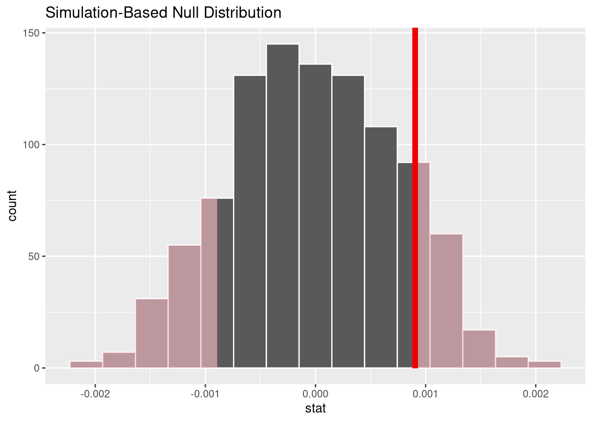
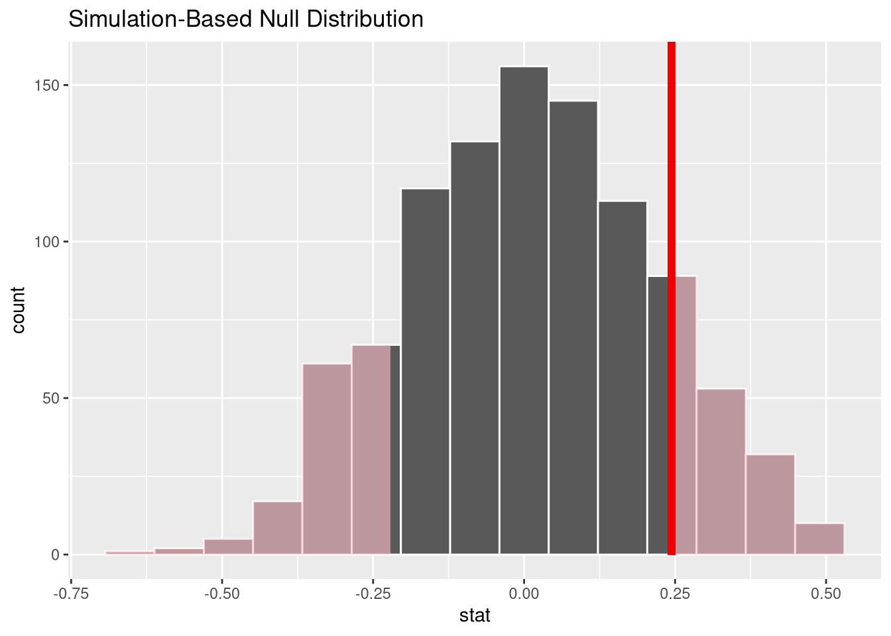

library(Stat2Data)
data("SATGPA")4 Additional Topics in Regression
4.1 Added Variable Plots
4.2 Techniques for Choosing Predictors
4.3 Cross-validation
4.4 Identifying Unusual Points in Regression
4.5 Coding Categorical Predictors
4.6 Randomization Test for Predictors
The treatment of randomization testing is a bit sparse; for a introduction to hypothesis testing with randomization that has more exposition, consult an Introduction to Modern Statistics or ModernDive.
The infer package (Couch et al. 2021) provides a simple and clear way to perform a randomization test for the slope of a regression model. The idea is that the process of testing the hypothesis “Is there a linear relationship between two numeric variables?” in the NHST framework (without making any distributional assumptions) can be broken down into 5 steps:
- Specifying the variables of interest
- Hypothesizing about their relationship
- Generating samples of data from this hypothesized state of the world
- Calculating a summary of each sample that measures their relationship in that sample
- Calculating the probability of observing your original data1, given the data you’ve observed from your hypothesized state of the world via your simulations in step 3.
Steps 1 through 4 describe the process behind creating the null-hypothesis distribution (i.e., the distribution of statistics you would expect to observe if the null hypothesis were true), while step 5 describes computing the p-value, so that you can reach a “reject” or “fail to reject” decision for your test. Each of these steps along the way has their own function in the infer package; to perform a hypothesis test, you simply chain these steps together!
Sometimes to understand how something, it’s best to see the whole, big picture, and slowly break it down piece by piece from there. I think this “forest, then tree” approach is useful for understanding the infer package, so to see how the infer package executes a randomization test, we’ll jump ahead to a completed example, and break down each part afterwards.
4.6.1 A randomization test for the slope
Let’s base our example on the SAT and GPA data used in Example 4.11
Let’s begin with code that executes Steps 1-4 on our hypothesis testing roadmap:
library(infer)
null_dist <- SATGPA |>
specify(GPA ~ VerbalSAT) |>
hypothesize(null = "independence") |>
generate(reps = 1000, type = "permute") |>
calculate(stat = "slope")and break this code down, one line at a time.
Step 1: Specify the relationship of interest
null_dist <- SATGPA |>
specify(GPA ~ VerbalSAT) |>The specify() function is where you set up the structure of the model using a the familiar formula notation. We’re specifying that we’re interested in the GPA and VerbalSAT relationship, and that we think the VerbalSAT score explains the GPA outcome.
Step 2: State your null hypothesis
hypothesize(null = "independence") |>Every null hypothesis test begins with an assumption that the null hypothesis is true. Most of the time, this assumption is implicit, but randomization tests with infer require you to make this assumption explicit.
Writing null = "independene" in this context means you are saying “knowing a persons Verbal SAT score tells me nothing about what their GPA is likely to be”. In other words, you’re saying the the slope of the regression line relating Verbal SAT to GPA is 0 in the entire population of SAT test takers.
Step 3: Generate new samples of data by permuting our data
generate(reps = 1000, type = "permute") |>This is the most import step in our hypothesis testing “pipeline”: This is where we take each Verbal SAT score from our data, and pair it with a random GPA score that is sampled (without replacement) from our original data as well. We repeated this process 1,000 times, which generates 1,000 new samples of data that are permutations of our original data.
This permutation process is helpful, because it generates 1,000 new data sets where each Verbal SAT score is completely unrelated to it’s paired GPA value. This how the Null Hypothesis says data is generated in the “real world”, and it’s exactly how we’ve generated our permutations. So, these 1,000 new data sets will show us exactly what kinds of GPA and Verbal SAT pairs we’d expect, if the null hypothesis is true!
Step 4: Calculate the GPA ~ VerbalSAT slope from each permutation
calculate(stat = "slope")Since our hypothesis test is about the relationship between GPA and Verbal SAT score, the slope is the statistic that best represents that idea. So, we summarize all of our 1,000 permuted data sets by fitting the GPA ~ VerbalSAT regression model to each one, and extracting the slope coefficient from each. So, the final result from our “pipeline” is 1,000 slopes observed from a world where the null hypothesis of “no relationship” is true!
visualize(null_dist)Step 5: Computing the p-value
Computing the p-value for our hypothesis test means we need to compare the observed slope from our real, unpermuted data to the distribution of slopes we obtained by summarizing our permuted data. Thus, we need the value of the observed slope! You could always do this the “traditional” way, using the lm() function, but since we only need the slope (and not the standard error, or \(R^2\), etc.), let’s demonstrate how you would do this using just specify() and calculate() from the infer package:
observed_slope <- SATGPA |>
specify(GPA ~ VerbalSAT) |>
calculate(stat = "slope")
observed_slopeFinally, we compute the p-value of our slope by using the get_p_value() function. This function counts number of times our a slope more extreme than the “real” slope resulted from the random permutation process, and dividing that by the total number of permutations performed. Since our question was a generic “is there a relationship?” question (not “is there a positive/negative” relationship), we want to count values in both tails of the null hypothesis distribution as “extreme”.
get_p_value(x = null_dist, obs_stat = observed_slope, direction = "both")This p-values corresponds to the area in the histogram of permuted slopes that is more extreme than 0.0009.
visualise(null_dist) +
shade_p_value(obs_stat = observed_slope, direction = 'both')
With such a large p-value, we fail to reject the null hypothesis, and conclude there is no evidence the two quantities are related in the population of SAT test takers.
4.6.2 A randomization test for the correlation
Example 4.11 actually demonstrates a randomization test for the Verbal SAT vs. GPA correlation, the GPA ~ VerbalSAT slope. But, it is easy to execute such a test simply by changing the stat argument of the calculate function from "slope" to "correlation"!
null_correlation_dist <- SATGPA |>
specify(GPA ~ VerbalSAT) |>
hypothesize(null = "independence") |>
generate(reps = 1000, type = "permute") |>
calculate(stat = "correlation")
observed_correlation <- SATGPA |>
specify(GPA ~ VerbalSAT) |>
calculate(stat = "correlation")
get_p_value(null_correlation_dist, obs_stat = observed_correlation,
direction = "both"
)visualise(null_correlation_dist) +
shade_p_value(obs_stat = observed_correlation, direction = "both")
4.6.3 Randomization for inference in Multiple Regression
This random permutation-based procedure can be extended to inference on the coefficients of a multiple regression model as well. All you need to do is:
- Adapt your formula argument in the
specify()function to reflect the structure of your model - Complete your pipeline with the
fit()function, instead of thecalcuate()function (which makes sense, since there isn’t one single summary statistic for all the relationships encoded by a multiple regression model)
For example, we could perform a permutation test on all four of the coefficients in the GPA ~ VerbalSAT * MathSAT model:
null_models <- SATGPA |>
specify(GPA ~ VerbalSAT * MathSAT) |>
hypothesize(null = "independence") |>
generate(reps = 1000, type = "permute") |>
fit()
observed_model <- SATGPA |>
specify(GPA ~ VerbalSAT * MathSAT) |>
fit()
get_p_value(null_models, obs_stat = observed_model,
direction = "both"
)visualise(null_models) +
shade_p_value(obs_stat = observed_model, direction = "both")
4.6.4 A note about controlling randomness
We’re used to our R code producing identical results every time we run it. For example, we don’t expect the correlation to change the first and second times we calculate it:
SATGPA |>
specify(GPA ~ VerbalSAT) |>
calculate(stat = "correlation")SATGPA |>
specify(GPA ~ VerbalSAT) |>
calculate(stat = "correlation")But, things get a bit trickier when we’re constructing the null hypothesis distribution. Consider the example below, where we construct 3 permutations and summarize each one with the correlation coefficient, and then run the exact same code again:
SATGPA |>
specify(GPA ~ VerbalSAT) |>
hypothesize(null = "independence") |>
generate(reps = 3, type = "permute") |>
calculate(stat = "correlation")SATGPA |>
specify(GPA ~ VerbalSAT) |>
hypothesize(null = "independence") |>
generate(reps = 3, type = "permute") |>
calculate(stat = "correlation")Here, we get 3 different correlations the second time! What’s going on?
The difference is: we’re relying on R’s random number generator to help us randomly shuffle the data to construct our three permutations. The second time we run the code, R generates different random numbers (as we would expect!), yielding different permutations that we obtained during the first execution, and thus three different correlations!
Having no idea what result you’ll get each time you run your code makes it difficult to write about your results, or re-produce them for people who are interested in the “proof” of your work. Luckily, we can take some control over R’s random number generator using the set.seed() function.
The set.seed() function “seeds” R’s random number generator with a fixed value, making the sequence of numbers it generates reproducible between different runs of the same code. Watch what happens when we “seed” the generate with an 11:
set.seed(11)
SATGPA |>
specify(GPA ~ VerbalSAT) |>
hypothesize(null = "independence") |>
generate(reps = 3, type = "permute") |>
calculate(stat = "correlation")set.seed(11)
SATGPA |>
specify(GPA ~ VerbalSAT) |>
hypothesize(null = "independence") |>
generate(reps = 3, type = "permute") |>
calculate(stat = "correlation")Now, we get the same correlations each time! It’s recommended that whenever you’re working with R’s random number generator, you set a seed to make your work reproducible. So, don’t forget about the set.seed() function as you’re working on your randomization tests!
Note that you can “seed” R’s random number generator with any positive integer.
4.7 Bootstrap for Regression
Not your original data exactly; rather, a statistic based on your original data↩︎